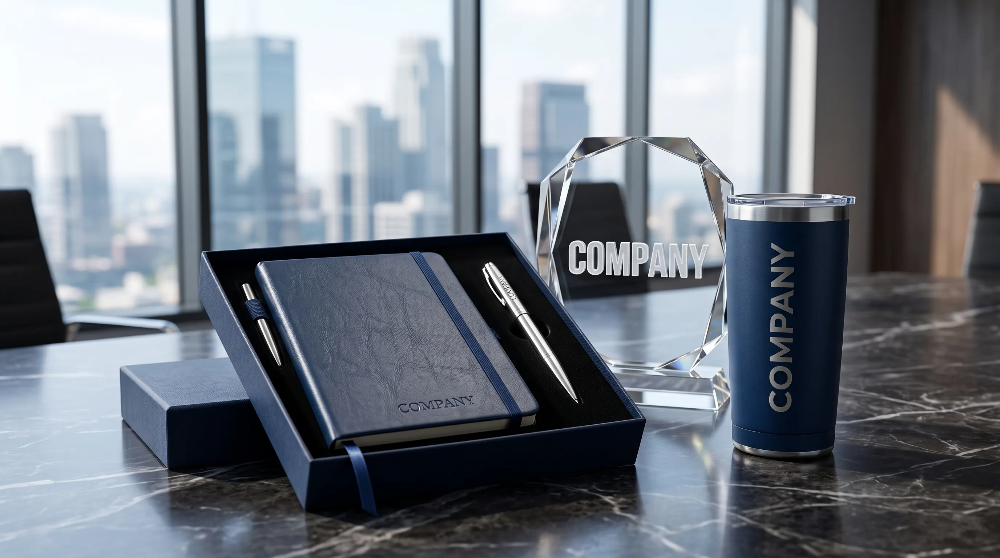

Apa yang Dimaksud dengan Office Starter Pack?
Office Starter Pack adalah paket souvenir kantor custom logo yang berisi beberapa item pendukung kerja dan diberikan sekaligus dalam satu kemasan, biasanya kepada karyawan baru atau peserta pelatihan.
Konsep ini banyak diadopsi perusahaan sebagai bagian dari proses onboarding karyawan.
Alih-alih memberikan satu jenis souvenir, perusahaan menyusun beberapa produk esensial dalam satu paket agar penerima langsung mendapatkan perlengkapan kerja dasar yang siap digunakan pada hari pertama bekerja.
Selain untuk karyawan baru, Office Starter Pack juga dapat digunakan dalam konteks lain, seperti paket sambutan bagi mitra kerja baru, paket pelatihan internal, atau paket pengenalan produk bagi tim eksternal yang bekerja sama dengan perusahaan.
Produk Apa Saja yang Termasuk Kategori Esensial?
Produk yang termasuk kategori esensial dalam Office Starter Pack umumnya meliputi alat tulis, notebook, tumbler, dan tas kerja ringan yang dicetak dengan logo perusahaan.
Alat tulis seperti pulpen dan pensil menjadi item wajib karena fungsinya yang digunakan hampir setiap hari. Notebook atau buku catatan custom logo juga sering disertakan karena membantu karyawan mencatat informasi penting selama masa orientasi maupun rapat kerja.
Tumbler custom logo menjadi salah satu item favorit karena sifatnya yang reusable dan sejalan dengan tren gaya hidup ramah lingkungan di lingkungan kerja modern.
Selain berfungsi sebagai wadah minum, tumbler juga sering dibawa keluar kantor sehingga logo perusahaan mendapat eksposur tambahan di luar lingkungan kerja.
Tas kerja ringan, seperti totebag atau tas selempang sederhana, biasanya ditambahkan sebagai wadah untuk menyimpan seluruh item starter pack sekaligus. Tas ini juga dapat digunakan kembali oleh karyawan untuk membawa laptop atau dokumen kerja sehari-hari.
Beberapa perusahaan juga menambahkan item pendukung lain seperti sticky notes, gantungan kunci, atau lanyard ID card custom logo untuk melengkapi kebutuhan identitas karyawan di lingkungan kantor.
Mengapa Perusahaan Perlu Menyiapkan Office Starter Pack?
Perusahaan perlu menyiapkan Office Starter Pack karena paket ini membantu karyawan baru merasa lebih siap secara fungsional dan memperkuat kesan profesional sejak hari pertama bekerja.
Proses onboarding yang baik tidak hanya mencakup pengenalan sistem kerja, tetapi juga kesiapan perlengkapan pendukung.
Ketika karyawan baru menerima perlengkapan kerja yang lengkap dan rapi, hal ini secara tidak langsung membangun kesan bahwa perusahaan memiliki sistem kerja yang terorganisir.
"Barang-barang yang dicetak dengan identitas perusahaan membantu karyawan merasa menjadi bagian dari tim sejak awal bergabung, yang pada akhirnya dapat berkontribusi pada tingkat keterlibatan kerja yang lebih baik."
— Meilita Mujayanti, Penulis Merchandise Kantor
Selain manfaat fungsional, Office Starter Pack juga berperan dalam memperkuat rasa memiliki karyawan terhadap perusahaan.
Barang-barang yang dicetak dengan identitas perusahaan membantu karyawan merasa menjadi bagian dari tim sejak awal bergabung, yang pada akhirnya dapat berkontribusi pada tingkat keterlibatan kerja yang lebih baik.
Bagaimana Cara Menyusun Office Starter Pack yang Efisien?
Cara menyusun Office Starter Pack yang efisien adalah dengan memilih item berdasarkan frekuensi penggunaan, menyesuaikan jumlah dengan anggaran, dan memastikan konsistensi desain logo pada seluruh produk.
Langkah pertama adalah memprioritaskan item dengan frekuensi penggunaan tinggi, seperti alat tulis dan tumbler, dibandingkan item dekoratif yang jarang digunakan. Pendekatan ini memastikan setiap barang dalam paket benar-benar memberi manfaat bagi penerimanya.
Langkah kedua adalah menyesuaikan jumlah item dengan anggaran yang tersedia. Perusahaan dapat memilih paket dasar berisi dua hingga tiga item esensial, atau paket lengkap dengan lebih banyak variasi produk tergantung kebutuhan dan skala perusahaan.
Langkah ketiga adalah memastikan konsistensi desain logo di seluruh item. Warna, ukuran logo, dan gaya visual sebaiknya seragam pada semua produk dalam satu paket agar kesan identitas brand terlihat lebih rapi dan profesional saat diterima sekaligus oleh karyawan.
Apa Perbedaan Office Starter Pack dengan Souvenir Kantor pada Umumnya?
Perbedaan utama Office Starter Pack dengan souvenir kantor pada umumnya terletak pada tujuan pemberian, yaitu untuk mendukung kesiapan kerja karyawan baru, bukan sekadar apresiasi atau branding umum.
Souvenir kantor pada umumnya dapat diberikan kapan saja, baik untuk klien, mitra, maupun acara tertentu, dengan tujuan utama membangun kesan dan hubungan bisnis.
Sementara itu, Office Starter Pack memiliki fokus yang lebih spesifik, yaitu menyediakan perlengkapan fungsional yang langsung dibutuhkan penerima dalam menjalankan aktivitas kerja sehari-hari.
Perbedaan ini juga memengaruhi pemilihan jenis produk. Souvenir kantor umum cenderung lebih fleksibel dalam variasi produk, sedangkan Office Starter Pack lebih terfokus pada kombinasi alat tulis, perlengkapan minum, dan tas kerja yang memang dibutuhkan sejak hari pertama bergabung.

Kesimpulan
Office Starter Pack merupakan bentuk souvenir kantor custom logo yang dirancang khusus untuk mendukung kebutuhan kerja harian, terutama bagi karyawan baru.
Penyusunan paket yang tepat perlu mempertimbangkan frekuensi penggunaan produk, kesesuaian anggaran, serta konsistensi desain logo agar identitas brand perusahaan tersampaikan secara maksimal sejak awal masa kerja karyawan.